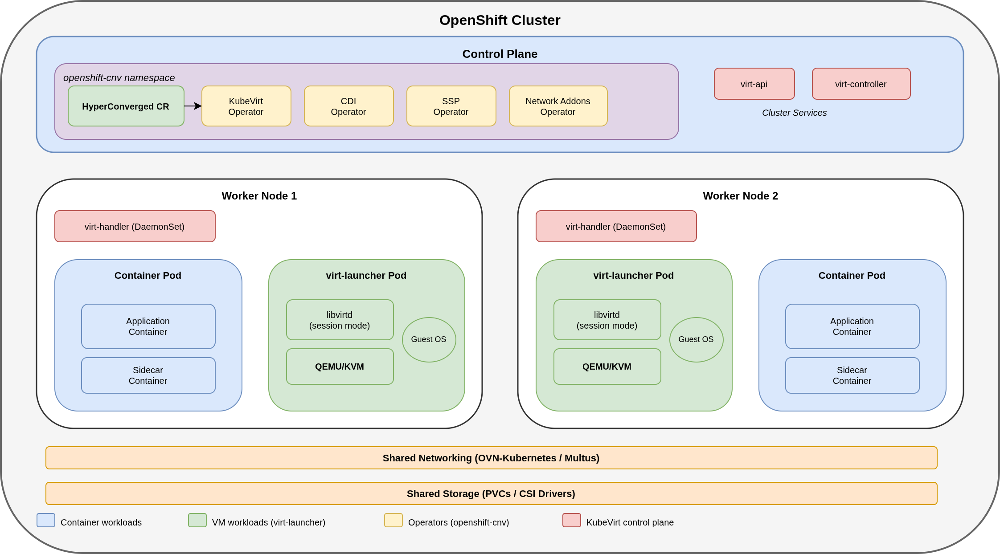
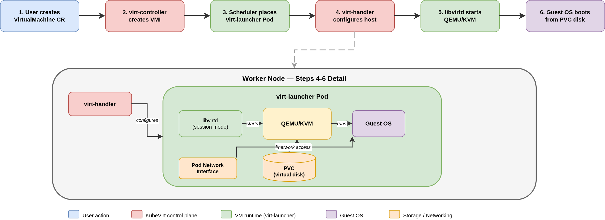

OpenShift Virtualization Architecture Overview
Overview
OpenShift Virtualization extends an OpenShift cluster with the ability to run virtual machines alongside container workloads on the same nodes. Built on the upstream KubeVirt project, it uses standard Kubernetes resources like custom resource definitions, persistent volume claims, and pods to manage the full VM lifecycle. This guide explains the architecture behind OpenShift Virtualization so you can understand how VMs run on Kubernetes before installing the operator or creating your first virtual machine.
What You’ll Learn
-
How VMs and containers share the same cluster infrastructure
-
The operator hierarchy from the HyperConverged CR to its sub-operators
-
The execution flow that takes a VirtualMachine CR through to a running QEMU/KVM process
-
How disk images become running VM disks through the storage pipeline
-
How VMs connect to networks using pod networking and secondary interfaces
-
How OpenShift Virtualization compares to VMware vSphere, Microsoft Hyper-V, and other traditional hypervisors
Applies to:
OpenShift Virtualization 4.18+
Prerequisites
-
Basic Kubernetes knowledge — familiarity with pods, namespaces, and custom resources
-
No cluster access required — this is a conceptual guide
-
For installation steps, see Installing and Configuring OpenShift Virtualization Operator
-
For detailed environment setup, see Prerequisites and Setup
VMs and Containers: Shared Infrastructure
OpenShift Virtualization does not replace the Kubernetes platform — it extends it. Virtual machines are defined using custom resource definitions (CRDs) and managed through the same Kubernetes API that handles pods, deployments, and services. The upstream project behind this capability is KubeVirt.
VMs and containers run on the same worker nodes, use the same storage backends, and share the same network infrastructure. A single OpenShift cluster manages both workload types. This means that existing Kubernetes capabilities like scheduling, RBAC, monitoring, and GitOps workflows apply to virtual machines without any additional tooling.
Each VM runs inside a virt-launcher pod.
From the perspective of the Kubernetes scheduler, a virtual machine is a pod with a QEMU/KVM process running inside it.
This is what allows VMs to share node resources with containers and benefit from the same cluster-level policies.
The following diagram shows the complete architecture — each component is explained in the sections that follow.

If you are coming from VMware vSphere, the OpenShift cluster is analogous to vCenter managing ESXi hosts. The HyperConverged CR configures the virtualization stack in a similar role to a vSphere cluster configuration. Each virt-launcher pod is comparable to a VM running on an ESXi host.
|
Operator Hierarchy
The entire OpenShift Virtualization stack is managed through a single HyperConverged custom resource in the openshift-cnv namespace.
Creating this CR activates four sub-operators, each responsible for a distinct area of functionality.
The KubeVirt Operator owns the core virtualization lifecycle.
It manages the API layer (virt-api) that validates VM requests, the controller (virt-controller) that orchestrates VM scheduling and state transitions, and the node-level agents (virt-handler) that configure host resources for each VM.
The CDI Operator (Containerized Data Importer) handles disk image management. It imports images from container registries, HTTP sources, or S3 buckets, uploads local images, and clones existing volumes — all into PersistentVolumeClaims that VMs use as their disks.
The SSP Operator (Scheduling, Scale, and Performance) manages VM templates and boot sources. It maintains a set of default templates for common operating systems and keeps their boot source images up to date automatically.
The Network Addons Operator deploys the networking components needed for secondary network interfaces. It installs Multus CNI and related plugins so that VMs can attach to additional networks beyond the default pod network.
| Namespace | Purpose |
|---|---|
|
Operators and control plane components |
|
Default boot source images for VM templates |
User namespaces |
Where VMs and their resources run |
| For the full component breakdown including pod-level details and the deployment tree, see the What Gets Deployed section of the install guide. |
How a VM Runs
The Execution Flow
When a virtual machine is started, the following sequence occurs:
-
A user creates or starts a
VirtualMachineCR, which defines the desired VM specification. -
virt-controllerdetects the CR and creates aVirtualMachineInstance(VMI) to represent the running state. -
The VMI triggers the creation of a
virt-launcherpod. The Kubernetes scheduler places this pod on a suitable worker node. -
virt-handleron the target node configures host-level resources including network bridges and device passthrough. -
Inside the
virt-launcherpod,libvirtdruns in session mode and starts a QEMU/KVM process. -
The guest operating system boots from the PVC-backed virtual disk.

Resource Relationships
OpenShift Virtualization uses three layers of resources to represent a virtual machine:
| Resource | Lifetime | Description |
|---|---|---|
|
Persistent |
The desired-state definition. Exists whether the VM is running or stopped. |
|
While running |
Created at startup, deleted at shutdown. Holds runtime information like IP address and node placement. |
Pod ( |
While running |
The Kubernetes pod that hosts the libvirtd and QEMU/KVM processes for the VM. |
When a VM is stopped, only the VirtualMachine resource exists. Starting the VM creates both a VirtualMachineInstance and a virt-launcher pod. Stopping it removes both.
You can see all three resources for a running VM with a single command:
oc get vm,vmi,pods -n <namespace>For a detailed explanation of VM states and transitions, see Understanding VM Lifecycle States and Basic Operations. For the full API field specifications, see OpenShift Virtualization API Component Overview.
Storage: From Image to Running Disk
Virtual machines need disk images to boot from. In OpenShift Virtualization, a declarative storage pipeline handles the process of turning a source image into a running VM disk.
A DataSource points to a boot image, such as a Fedora or RHEL cloud image maintained by the SSP Operator. When a VM is created, a DataVolume tells the CDI controller to import, clone, or upload that image into a new PersistentVolumeClaim (PVC). The CDI controller handles the data transfer automatically. The resulting PVC is mounted into the virt-launcher pod and presented to QEMU as a virtual disk. Other approaches are also available: you can create a DataVolume directly to upload an image (including through the web console UI), or use container disks defined inline in the VM YAML for lightweight, ephemeral boot volumes.
The PVC access mode determines what operations are available to the VM. ReadWriteOnce (RWO) is sufficient for VMs that stay on a single node. ReadWriteMany (RWX) is required for live migration, because the disk must be accessible from both the source and destination nodes at the same time.
If you are coming from VMware vSphere, a DataSource is similar to a content library template, a DataVolume is comparable to a clone operation, CDI is the engine that performs the clone, and the resulting PVC is the equivalent of a vmdk file.
|
For storage configuration details, see Configuring Default Storage Class and the Storage module.
Networking: How VMs Connect
Every VM automatically receives a pod IP address through the cluster’s default OVN-Kubernetes network. In masquerade mode, outbound network access works immediately. To expose a VM to traffic outside the cluster, you create Kubernetes Services and Routes the same way you would for a containerized application.
For workloads that require direct Layer 2 access, VLAN tagging, or hardware-accelerated networking, VMs can attach secondary network interfaces.
A NetworkAttachmentDefinition CR defines each additional network, and the Multus CNI meta-plugin attaches it to the VM’s pod.
Available options include User Defined Networks (UDNs), Linux bridges, localnet, Layer 2 overlays, and SR-IOV for hardware-accelerated networking. UDNs are the current default in recent OpenShift releases and the approach Red Hat is actively pushing forward.
The NMState Operator manages node-level network configuration such as bridges, VLANs, and bonds declaratively through Kubernetes CRs.
| If you are coming from VMware vSphere, the default pod network is similar to a NAT network in VMware Workstation. Multus secondary networks are comparable to adding vNICs attached to different port groups or virtual switches. |
For networking tutorials and topology options, see the Networking module.
Comparing with Traditional Hypervisors
The following table maps common virtualization concepts across platforms:
| Concept | OpenShift Virtualization | VMware vSphere | Microsoft Hyper-V |
|---|---|---|---|
VM definition |
YAML custom resource ( |
.vmx file + vSphere inventory |
XML config + PowerShell / SCVMM |
Hypervisor |
QEMU/KVM (in virt-launcher pod) |
ESXi (bare-metal) |
Hyper-V (Type 1, bare-metal or Windows Server role) |
Management layer |
|
vCenter Server / vSphere Client |
SCVMM / Windows Admin Center / PowerShell |
Storage |
PVCs backed by CSI drivers |
VMFS / vSAN / NFS datastores |
CSV / SMB / local storage |
Networking |
OVN-Kubernetes + Multus secondary networks |
vSwitch / dvSwitch / NSX |
Hyper-V Virtual Switch / SDN |
HA / Live migration |
Pod rescheduling + live migration (requires RWX storage) |
vMotion / vSphere HA / DRS |
Live Migration / Failover Clustering |
Declarative API |
Native (Kubernetes API, GitOps-compatible) |
Partial (PowerCLI, REST API) |
Partial (PowerShell / DSC) |
Container co-location |
Native — VMs and containers share the same nodes |
Separate infrastructure (Tanzu for containers) |
Separate infrastructure (AKS for containers) |
| Red Hat Virtualization (RHV), formerly RHEV, also used KVM as its hypervisor through the oVirt management platform. OpenShift Virtualization is the successor platform for running KVM-based workloads within Red Hat’s product portfolio. |
The most significant difference between OpenShift Virtualization and traditional hypervisors is the management model. Traditional platforms are primarily imperative — you create and modify VMs through UI clicks, scripts, or API calls that describe actions to take. OpenShift Virtualization is declarative — you define the desired state of a VM in a YAML manifest, and the platform continuously reconciles toward that state. This makes VMs compatible with GitOps workflows, Helm charts, and CI/CD pipelines.
The other distinction is convergence. Traditional hypervisors manage VMs in isolation from container workloads, requiring separate infrastructure and tooling for each. OpenShift Virtualization runs both on the same cluster, managed by the same tools and governed by the same policies.
Summary
In this guide you learned:
-
How OpenShift Virtualization extends Kubernetes to run VMs as first-class objects alongside containers
-
The operator hierarchy from the HyperConverged CR through its four sub-operators
-
The execution flow from a VirtualMachine CR through virt-controller and virt-launcher to a running QEMU/KVM process
-
How the storage pipeline turns disk images into PVC-backed virtual disks
-
How VMs connect through the default pod network and optional Multus secondary interfaces
-
How OpenShift Virtualization compares to VMware vSphere, Microsoft Hyper-V, and other traditional hypervisors
See Also
-
Installing and Configuring OpenShift Virtualization Operator - Install and configure the operator
-
Understanding VM Lifecycle States and Basic Operations - VM states, transitions, and management operations
-
OpenShift Virtualization API Component Overview - API component reference for all virtualization objects
-
Storage module - Storage configuration tutorials
-
Networking module - Networking topology options and tutorials